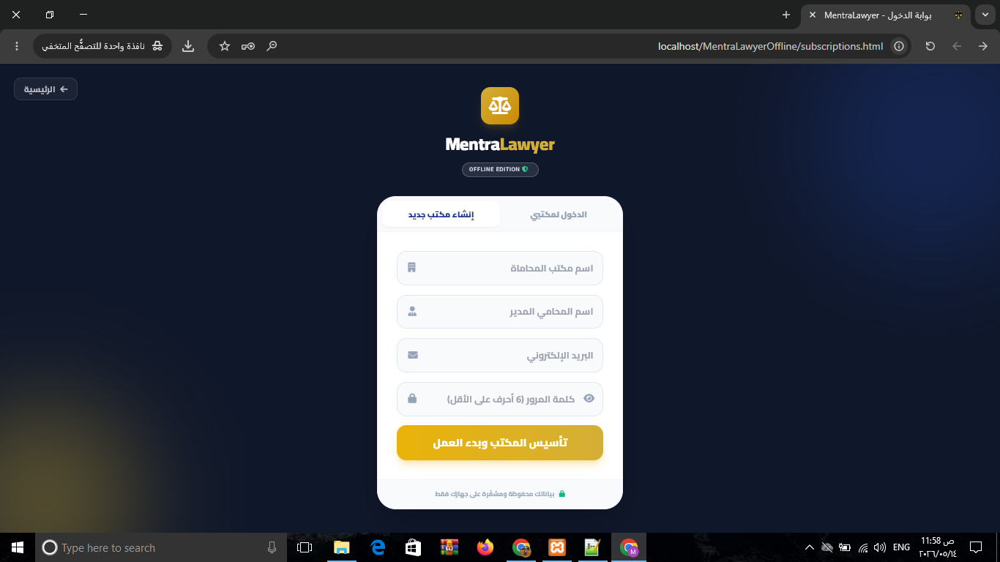
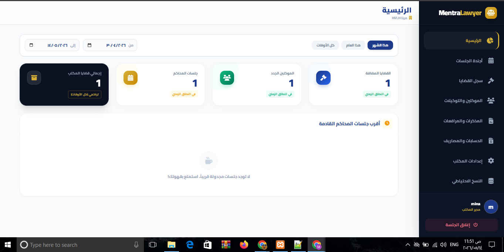
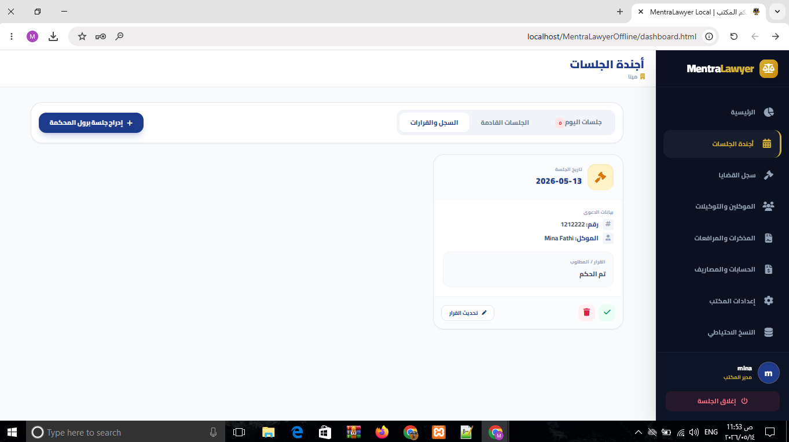
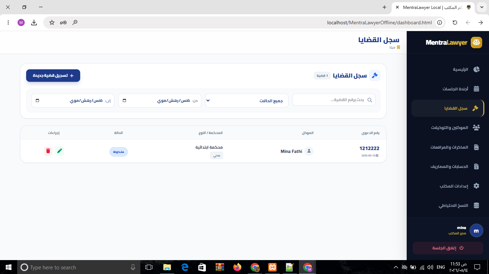
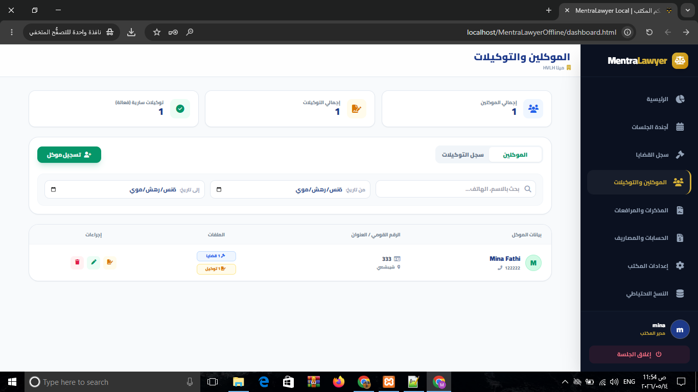
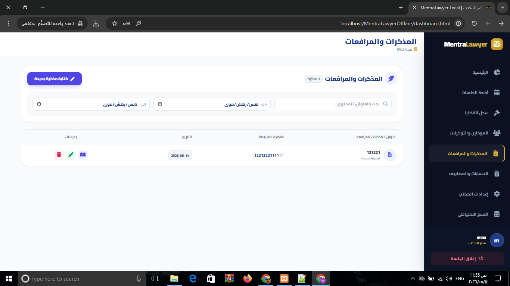
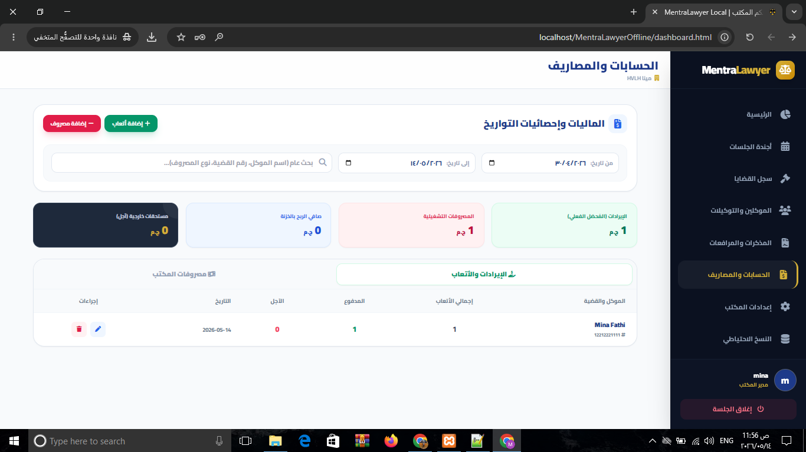
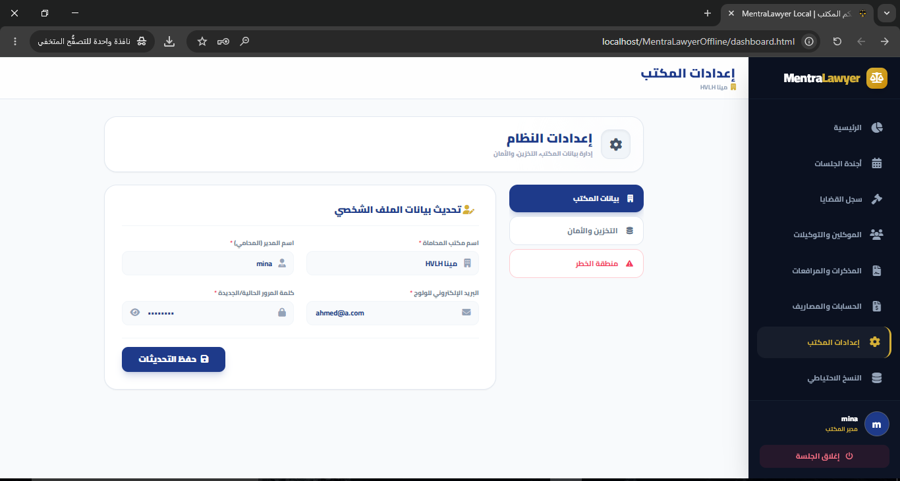
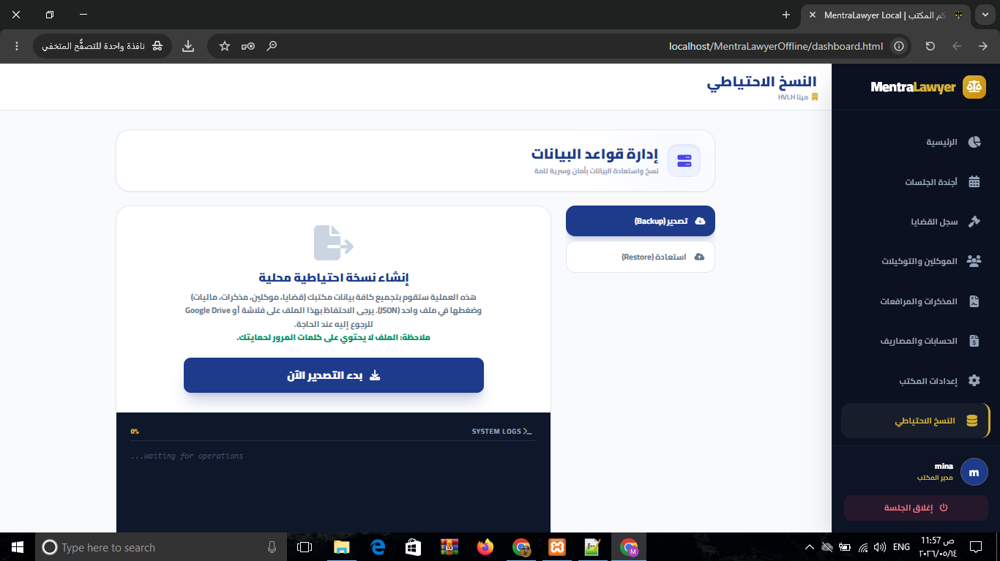

البداية: تسجيل الدخول (subscriptions)
هذه هي واجهة الدخول الأولى للنظام، حيث تقوم بإنشاء حساب مكتبك أو تسجيل الدخول لحسابك الموجود مسبقاً لبدء العمل في بيئة آمنة.

الشاشة الرئيسية ولوحة القيادة (main)
تعطيك نظرة عامة وإحصائيات سريعة عن عدد القضايا، الموكلين، والجلسات القادمة اليوم، لتكون على اطلاع دائم بحالة المكتب.

الأجندة ومواعيد الجلسات (agenda)
من هنا يمكنك إدارة جدولك الزمني بالكامل، إضافة مواعيد الجلسات، المرافعة، والمواعيد الإدارية مع فلترة ذكية للتواريخ.

إدارة القضايا (cases)
قلب النظام النابض. سجل قضاياك، أرقامها، المحاكم المختصة، واربطها بالموكلين لتتمكن من الوصول لبيانات أي قضية بضغطة زر.

سجل الموكلين (clients)
قاعدة بيانات شاملة لعملائك وموكليك، تحتوي على أسمائهم، أرقام هواتفهم، والرقم القومي، مع إمكانية البحث السريع عن أي موكل.

الأرشيف والمستندات (documents)
تخلص من الأوراق المتراكمة! ارفع صور التوكيلات، محاضر الجلسات، والمستندات الخاصة بكل قضية للرجوع إليها في أي وقت بسهولة.

الحسابات والماليات (accounting)
نظام مالي متكامل يسجل إيرادات المكتب (أتعاب القضايا) ومصروفات التشغيل، مع حساب تلقائي لصافي الربح والمبالغ الآجلة.

إعدادات النظام (settings)
منطقة التحكم الخاصة بالمدير. يمكنك تعديل اسم المكتب، تغيير كلمة المرور، أو حتى مسح البيانات بالكامل (إعادة ضبط المصنع).

النسخ الاحتياطي واستعادة البيانات (backup)
أهم خطوة لحماية مجهودك. قم بتحميل نسخة احتياطية من كافة بياناتك محلياً على جهازك أو فلاشة، واستعدها في أي وقت بضغطة زر.

تحتاج إلى مساعدة؟
نحن دائماً هنا لدعمك. إذا واجهتك أي مشكلة، أو كان لديك استفسار حول كيفية استخدام النظام، لا تتردد في التواصل معنا مباشرة.
012 119 34 816متاحون للرد على استفساراتكم عبر الواتساب